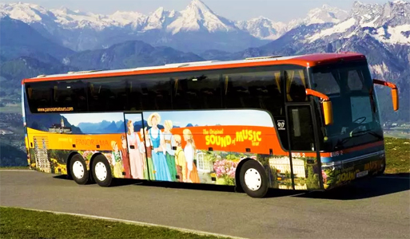

사운드 오브 뮤직 투어 Sound of Music Tour
영화의 주요 촬영장소를 관람하는 투어로 그 동안의 여행과는 달리 버스를 타고 편안하게 근교의 짤츠캄머구트까지 갈 수 있어 한 번 해볼 만합니다.
폰트랩 대령의 집, 영화 속 리슬과 롤프가 'I am 16 going on 17'을 불렀던 'summer house', 폰트랩과 마리아가 결혼식을 올렸던 'Mondsee'의 교회, 미라벨 정원 등을 둘러보는 것이 주요 코스입니다.
여행 전에 영화를 보고 가거나 돌아와서 본다면 감회가 새로울 것입니다. 가이드는 영어로만 진행되며 투어 내내 사운드 오브 뮤직의 영화음악이 흘러 나오고 가이드도 무척 재미있게 진행합니다.
투어시간 : 09:15, 14:00(하루 두 차례 출발, 약 4시간 소요)
요금: € 50.00(미라벨 정원 앞에서 출발하고, 예약 역시 미라벨 정원 앞 광장에 있는 파노라마 투어 티켓판매소에서 하면 된다.)
www.panoramatours.com